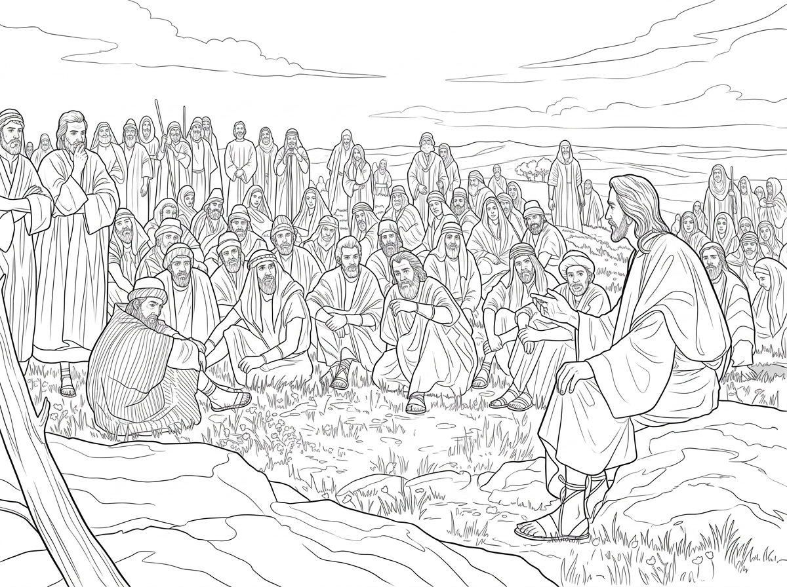

CHAPTER 02 OF 12
He Called My Name

Ever since the golden eagle had taught me how to see, I had grown even more eager to look upon the world through the light. I was no longer satisfied with watching only the sky, the sea, the forests, and the valleys. I began to pay attention to every living thing. Especially human beings.
My teacher had told me that human beings were creatures whom the Creator regarded with special care. So I began to watch them more closely.
Of all the living creatures upon the earth, human beings seemed to have the greatest power to change the world around them. We often saw them from high above. They built houses, cultivated fields, tended flocks, and carved roads through valleys and along rivers. They could even pile stones into walls and shape wood into boats that carried them to places far beyond our sight.
Yet we eagles never dared to come too close to them. My parents had once told me that human beings were made by the Creator in His own image.
I gradually discovered that human beings truly were different from the rest of creation. They could think. They could love one another, and they could hurt one another. They could rejoice over things they could not see, and they could worry about things that had not yet happened. Sometimes peace rested upon their faces. At other times, deep fear seemed to hide within their eyes.
When I looked at people through the light, I could see white clouds or dark clouds above their heads. Above some people hung clouds that were pure and gentle. Sunlight passed through them, making their faces appear peaceful and bright. Above others gathered heavy clouds of darkness. These were not clouds in the sky. They did not drift away with the wind, nor could sunlight scatter them. And human beings themselves could not see the clouds above their own heads.
Those who carried white clouds seemed gentler, and I was not afraid to come near them. But those who carried dark clouds seemed to have their fear, anxiety, jealousy, and even resentment written across their faces. I kept my distance from them.
All of this made me believe even more strongly that we had not come into this world by accident. The mountains had their order. The sea had its boundaries. Birds knew how to fly. Fish knew how to move through the depths of the water. A seed fell into the earth and somehow knew to grow toward the light. I did not know how the Creator had made all these things. Yet behind everything I saw, there seemed to be a pair of eyes. Behind every living thing, there seemed to be a Creator. And so, when I looked upon the world, I no longer saw only what had been created. Through the things He had made, I began to search for the Creator whom I could not see.
Then, one day, I saw my Master for the first time. That was the first time I discovered that there was a kind of light I had never seen before. There was light upon Him. But it was not the light of the sun falling upon Him. When sunlight falls upon a person, it changes as the person moves.
But there was light upon Him. Even when He walked among the crowd, I could still see it. Even when He entered the forest, the light remained. I had spent so long learning to see through the light. But that day, for the first time, I saw One who seemed to carry the light within Himself.
That day, He was teaching a crowd of people. Only later did I learn His name.
Jesus.
I was perched on a tall tree at the edge of the forest. Beyond the trees lay a broad valley filled with villages, fields, and pasturelands where shepherds tended their flocks. A gentle breeze came through. I spread my wings and left the treetop, circling above the valley. The wind passed beneath my wings, and all I had to do was let it carry me. From that height, the people below seemed very small.
A great crowd had gathered from every direction. Farmers, shepherds, women, children, and many others whose names I did not know sat upon the hillside around Jesus. He wore clothing much like the others. There was nothing about Him that seemed outwardly remarkable.
Yet whenever Jesus spoke, the crowd became quiet. His words seemed to flow from somewhere deep within Him, as though they had never been taught to Him by anyone else.
It was then that I noticed a man. A few days earlier, I had flown over his barn. Around it, I had seen many lizards and frogs.
He had the largest barn in the village. I guessed that he must have been the richest man there. Inside his barn were carts, farming tools, and equipment for grinding grain. I had often watched him carry one heavy sack of grain after another into the barn, only to come back out and carry in more.
Whenever he set down a heavy sack, he did so slowly. He looked as though those grains had been weighing upon him for many years. Even when he sat down to rest, I could almost imagine the weight still hanging from his shoulders. His brow was always furrowed. He would look at his full barn, then at his vast fields, and finally into the distance. It was as though there were always something he could not stop worrying about.
That day, I saw him again. He was standing beside the field, talking with another man. They looked out over the fields that had already been harvested.
“The harvest is good this year,” the other man said.
He nodded, but he did not smile. “Yes.”
“Your barns are already full.” He crouched down, picked up a handful of earth, and slowly crushed it between his fingers.
“But I am worried about next year.” He looked across his fields and was silent for a moment.
“This year has been good. But what about next year?”
“Will everything I have now really be enough to last me?” He lowered his head and looked at the soil in his hand.
“I just want to make sure I will never be in want.”
“You already have plenty,” someone said.
But he shook his head. “Not enough.”

Jesus began speaking about me, flying in the sky.
“Look at the birds of the air. They do not sow or reap or store grain in barns.”
“Yet your heavenly Father feeds them. Are you not much more valuable than they?”
Jesus lifted His head. He stretched out His hand and pointed toward me as I circled high above the valley. The crowd followed His gesture. One pair of eyes after another turned toward me. I had never been watched by so many people at once. I did not know where I was supposed to fly, so I simply continued circling through the sky.
And then, in that moment, His eyes met mine. For an instant, all I could see was Jesus and the hand He had raised toward me. The way He looked at me was nothing like the way hunters looked at us.
And suddenly, I understood what He had just said.
“Your heavenly Father feeds them.”
I was one of those birds He was talking about. And that heavenly Father was watching over me. Jesus continued speaking to them:
“Can any one of you by worrying add a single hour to your life?”
The man with the furrowed brow lowered his head. He said nothing more.
Then Jesus began speaking about the flowers of the field. He told the people to look at the flowers scattered across the valley.
“Consider how the wildflowers grow. They do not labor or spin.”
I followed His gaze. The valley was filled with flowers. When the wind moved through them, they swayed gently beneath the brilliant sunlight.
“Yet I tell you, not even Solomon in all his splendor was dressed like one of these,” Jesus said.
The man slowly lifted his head. One of his companions leaned toward him and whispered, “He is right.”
Another man, who knew him well and knew how often he worried, said, “The crops have not even been planted, and you are already worrying about the harvest.”
The man did not answer. He simply looked at the flowers in the valley. The furrows in his brow seemed to loosen. Perhaps, for the first time, he realized that while he had been busy preparing for tomorrow, he had never truly stopped to look at the flowers of today.
At last Jesus said, “If that is how God clothes the grass of the field, which is here today and tomorrow is thrown into the fire, will He not much more clothe you—you of little faith?”
The man drew a deep breath. And then, to my surprise, he smiled. He stood and lifted his face toward the sky. The wind moved through his hair. His shoulders slowly straightened. Whatever had been pressing upon him for so long seemed to loosen its grip. It was like dry earth after a long drought, when green shoots finally begin to break through the soil. A smile slowly spread across his face. Then he opened his arms and cried out toward the sky in joy.
Jesus continued speaking, telling one remarkable story after another. The people sat upon the hillside listening through the afternoon, as though His teaching had only just begun. Even I had forgotten how long I had been flying above Him.
Then Jesus began speaking about sheep. I especially liked listening when Jesus talked about sheep, because I had flown over many shepherds' sheepfolds. Some sheepfolds were enclosed by low walls made of stones, with only one narrow entrance.
At night, the shepherds would lead the sheep inside. The sheep would huddle together. And the shepherd would remain near the entrance. During the night, wolves would howl in the distance. Their cries echoed through the valleys. Sometimes foxes would come near as well. I had seen shepherds take up their staffs and drive away wolves that came too close to the flock. On some nights, the shepherd hardly slept at all. Even when dawn came, he remained beside the sheep.
Jesus said that a shepherd knows his sheep. And the sheep know the voice of their shepherd.

Strangely, whenever Jesus spoke about sheep, I felt that He was speaking about something more than sheep. It seemed that He was speaking about these people.
Every time Jesus spoke a word, I seemed to see tiny seeds of light falling from His mouth. They were seeds of light that, as far as I could tell, only I could see.
They drifted toward the crowd. Some fell into people's hearts. And when they fell, the darkness above those people slowly began to brighten. Places that had once been dim began to glow. Some listened intently. I saw the seeds enter their hearts, as though tiny sparks had begun to shine within dark soil.
But I also saw seeds fall beside some people. They paid no attention. They were too busy talking among themselves. Or arguing with one another. Some simply got up and walked away, returning to their villages and their ordinary work. Those seeds of light fell upon the ground. And soon, their light faded away.
I had never seen light like that anywhere else. Only the words that came from His mouth carried such light. I could not help but wonder:
“Why do His words carry light?”
🌟 Finished this chapter?
Fly over and answer five questions about "He Called My Name" to earn stars!
Fly to get stars